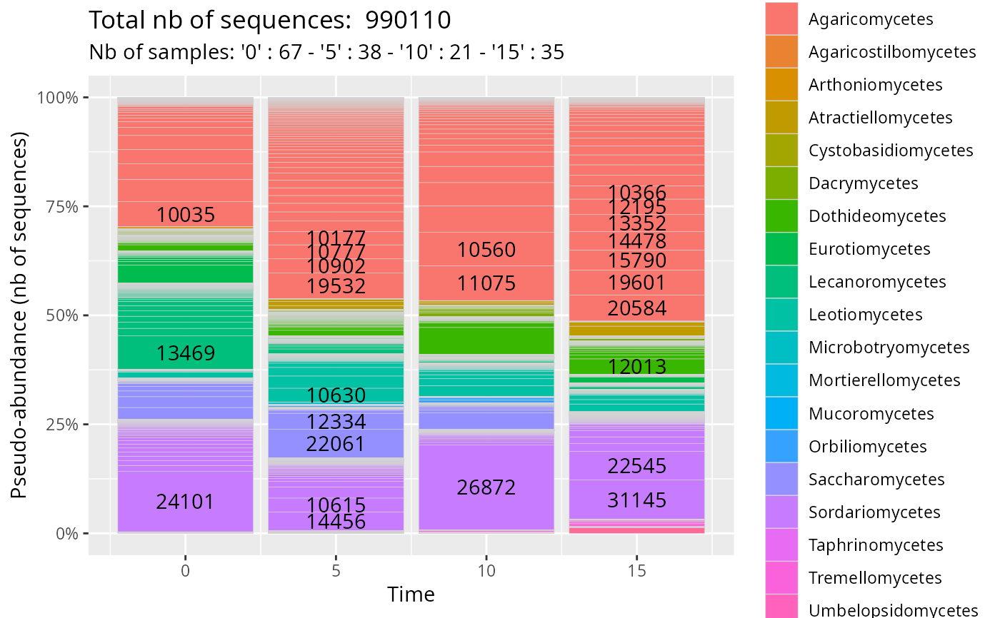
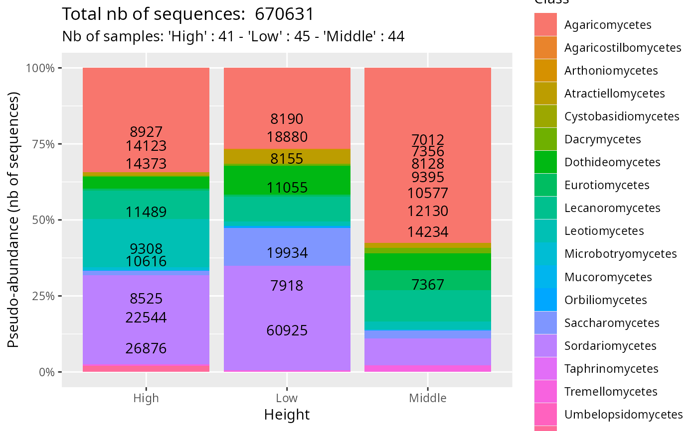
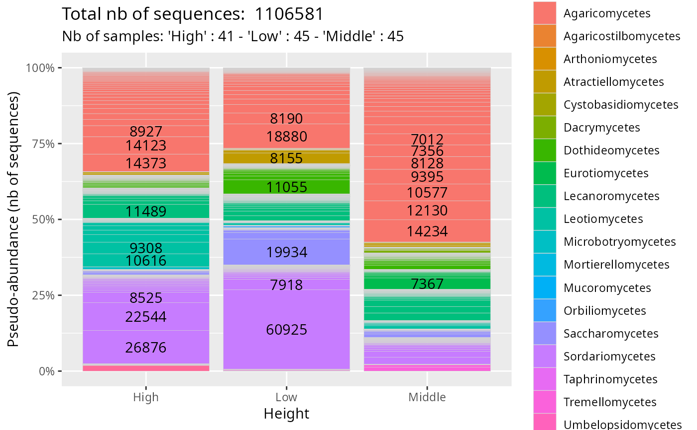

Plot taxonomic distribution in function of a factor with stacked bar in %
Source:R/plot_functions.R
plot_tax_pq.Rd
An alternative to phyloseq::plot_bar() function.
Usage
plot_tax_pq(
physeq,
fact = NULL,
merge_sample_by = NULL,
type = "nb_seq",
taxa_fill = "Order",
print_values = TRUE,
color_border = "lightgrey",
linewidth = 0.1,
prop_print_value = 0.01,
nb_print_value = NULL,
add_info = TRUE,
na_remove = TRUE,
clean_pq = TRUE
)Arguments
- physeq
(required): a
phyloseq-classobject obtained using thephyloseqpackage.- fact
(required) Name of the factor to cluster samples by modalities. Need to be in
physeq@sam_data.- merge_sample_by
a vector to determine which samples to merge using the
merge_samples2()function. Need to be inphyseq@sam_data- type
If "nb_seq" (default), the number of sequences is used in plot. If "nb_taxa", the number of ASV is plotted. If both, return a list of two plots, one for nbSeq and one for ASV.
- taxa_fill
(default: 'Order'): Name of the taxonomic rank of interest
- print_values
(logical, default TRUE): Do we print some values on plot?
- color_border
color for the border
- linewidth
The line width of geom_bar
- prop_print_value
minimal proportion to print value (default 0.01)
- nb_print_value
number of higher values to print (replace prop_print_value if both are set).
- add_info
(logical, default TRUE) Do we add title and subtitle with information about the total number of sequences and the number of samples per modality.
- na_remove
(logical, default TRUE) if TRUE remove all the samples with NA in the
split_byvariable of thephyseq@sam_dataslot- clean_pq
(logical) If set to TRUE, empty samples are discarded after subsetting ASV
Examples
data(data_fungi_sp_known)
plot_tax_pq(data_fungi_sp_known,
"Time",
merge_sample_by = "Time",
taxa_fill = "Class"
)
#> 23 were discarded due to NA in variables present in formula.
#> Cleaning suppress 3 taxa and 1 samples.

# \donttest{
plot_tax_pq(data_fungi_sp_known,
"Height",
merge_sample_by = "Height",
taxa_fill = "Class",
na_remove = TRUE,
color_border = rgb(0, 0, 0, 0)
)
#> 54 were discarded due to NA in variables present in formula.
#> Cleaning suppress 52 taxa and 1 samples.

plot_tax_pq(data_fungi_sp_known,
"Height",
merge_sample_by = "Height",
taxa_fill = "Class",
na_remove = FALSE,
clean_pq = FALSE
)
#> Warning: `group` has missing values; corresponding samples will be dropped

# }